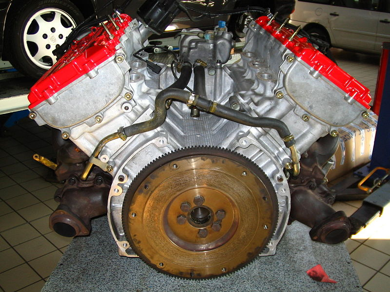

- Automation as documentation
- Fast feedback when something becomes broken
- Clear source of error
- Lower context switching costs
- Research of non-deterministic tests
|  | Unit tests |
| Functional and end-to-end tests |
...but sometimes the risk is best tackled with end-to-end tests
phpunit --log-junit suite.xml tests/
<testcase name="testCellEvolution"
class="GameOfLifeTest"
file="/home/giorgio/code/project/GameOfLifeTest.php"
line="6"
time="10.011456">
...
xdebug.profiler_enable=1
;zend_extension=/usr/lib/php5/20100525/xdebug.so
Before the cure (serial execution)
Total: 3m36s
After the cure (parallelized on 4 processes)
Total: 1m35s
paratest --processes 4 --runner WrapperRunner tests/acceptance-parallel
switch (getenv('TEST_TOKEN')) {
case 1:
$onebipDatabase = 'onebip';
break;
default:
$onebipDatabase = 'onebip' . getenv('TEST_TOKEN');
break;
}
$tmpdir = '/tmp/files' . uniqid();
@giorgiosironi @Onebip
github.com/giorgiosironi/paratest (some features not yet in @brianium's upstream)